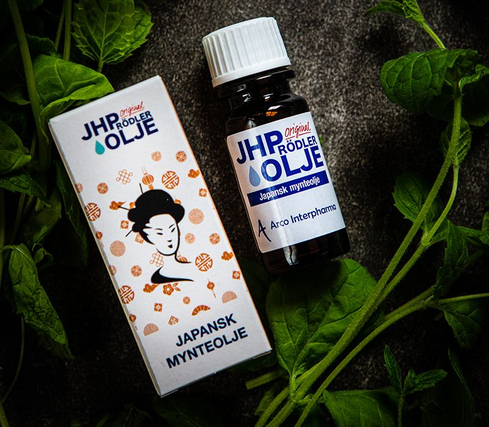

Urolige bein
Mange bruker JHP Olje om kvelden på leggene, for å roe ned før søvn.
Stubberudveien 124B
3001 Drammen
JHP Olje er en japansk mynteolje som har dokumentert effekt mot plager som restless leg, forkjølelse, magebesvær, lettere hodepine, leddsmerter og insektstikk.
Noen edle dråper smøres direkte på der smertene sitter, men kan også blandes i massasjeolje for massering av hele kroppen.
Mange bruker JHP Olje om kvelden på leggene, for å roe ned før søvn.
Dråper på bryst og nakke, eller dampbad i vasken med noen dråper olje.
Brukes også innvortes – noen dråper i vann, eller som te.
Smøres tynt på tinningene eller der leddene er ømme.
Avkjølende på stikk og kløende hud – også brukt mot svangerskapskløe.
Liten flaske som går i vesken, og som dekker flere behov enn én tube.
JHP Olje utnytter oljen fra den japanske mynteplanten fullt ut. Opp igjennom tidene har det innen folkemedisinen vært sverget til planten, og oljen brukes i dag over hele verden.
Vi har gjort oss erfaringer med at JHP Olje virker smertedempende ved betennelser i for eksempel skulder, albue og håndledd. Den virker også dempende ved bihulebetennelse når man smører over de stedene i ansiktet der smertene sitter.
Anmeldelsene er hentet fra firmaets egen side, og er skrevet av kunder og behandlere.
«Jeg var først skeptisk, trodde ikke det ville gi meg noe effekt. Prøvde JHP en dag da jeg følte meg uggen og forkjølelsen var på vei. JHP løsnet og åpnet luftveiene mine.»
Morten«Jeg har alltid med meg JHP Olje, enten i håndvesken eller fast inventar i kjøkkenskapet. Den lindrer sår og tørr hals, tett nese eller øm muskulatur.»
Siv Gunhild«Jeg smurte oljen over problemområdene og den virket avkjølende med en gang. Den lindret kløen, og jeg klarte å slappe av.»
Jeanette
Ved å kjøpe JHP Olje er du med å bidra til prosjektet Bit by Bit. JHP Olje deler overskuddet av salget til å hjelpe levevilkårene til arbeidsdyr i Gambia.
Det er en liten olje med et større formål – og en grunn til at mange forhandlere har den i hyllen.
Om Bit by BitJHP Olje fås hos forhandlere over hele landet. Ta kontakt, så hjelper vi deg å finne den nærmeste – eller svarer på spørsmål om bruk.